'스마일배송'은 대한민국 오픈마켓 플랫폼 서비스 '지마켓'의 자체 배송 서비스입니다. 스마일배송은 14년에 출시된 익일 배송 보장 서비스로 '오늘 주문
내일 도착'이란 콘셉트로 빠르고 보장된 배송 서비스를 제공합니다. 시장, 고객 니즈 변화에 따라 22년 3월 스마일배송 서비스에 더 빠른 배송을 제공하는 '새벽배송'
하위 서비스를 론칭했습니다. 새벽배송 서비스는 지마켓 멤버십 서비스 '스마일클럽' 회원을 대상으로 제공되며 강남 3구를 시작으로 현재 서울 전역으로 확대되어 더 많은
고객에게 더 빠른 배송 경험을 제공하고 있습니다.
스마일배송 '새벽배송' UX 아이데이션에 참여하고 프로토타입으로 제작해 사용성 평가를 진행했습니다. 사용성 평가의 전체 과정에서 테스트 환경 개선과
UX 개선 필요 지점을 발굴했습니다.
시장 변화에 따라 빠른 배송에 익숙해진 고객 경험을 만족시키기 위해 스마일배송은 더 빠른 배송 서비스를 준비했습니다. 스마일배송 상품 중 자사 물류센터에서 출고되는
상품들은 더 빠르게 배송될 수 있도록 물류 인프라를 발전시켜 '새벽배송' 서비스로 확장되었습니다. 지마켓에 신규로 추가된 새벽배송 상품을 알리고 쉽게 탐색할 수 있도록
새벽배송 UX 아이데이션에 참여했습니다. 론칭 전 사용성 검증을 위한 프로토타입을 만들어 UT(사용성 평가, Usability Test)를 진행해 개선지점을 파악하고 사용성을
검증했습니다.
Usability test
새벽배송 서비스는 지마켓 멤버십 서비스인 '스마일클럽' 회원을 대상으로 제공되는 서비스입니다. 따라서 새벽배송 상품이 노출되는 각 동선에 새벽배송 서비스 가능 유무와
새벽배송 서비스 제공 대상, 멤버십 혜택에 대한 내용을 고객이 쉽고 빠르게 경험할 수 있도록 테스트를 통한 검증이 필요했습니다.
Item card
검색 결과 상품 정보에 새벽배송 가능 여부를 표시하는 태그 디자인이 추가되었습니다. 비회원, 일반회원, 멤버십회원 각 케이스에 맞는 새벽배송 태그 디자인 테스트를
진행하며 일반 배송과의 구분감, 혜택 대상, 가능 지역에 대한 필수 정보 인지성을 검증했습니다.
Filter
새벽배송 서비스는 혜택 가능 지역(서울, 경기 일부)에서 제공되는 기능으로 배송 주소록과 새벽배송 필터 기능이 추가됨에 따라 필터의 형상, 사용성, 인지성에
대한 A/B 테스트를 진행했습니다.
Cart
장바구니에 담긴 새벽배송 상품들의 주문 마감 시간 안내 UX를 테스트하고 새벽배송 주문 시간 마감 시 배송 정보 변경에 대한 피드백 방법을 검증했습니다.
Order
새벽배송 상품을 수령받기 위한 '새벽배송 상세정보' 입력 필드가 추가되었고 접근성 파악을 위한 사용자 패턴을 분석하고 UX Writing 테스트를 진행했습니다.
Item Card & Filter
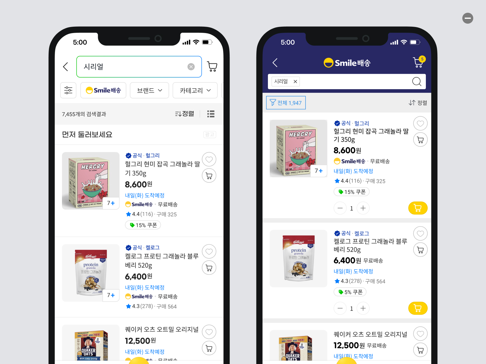
Before
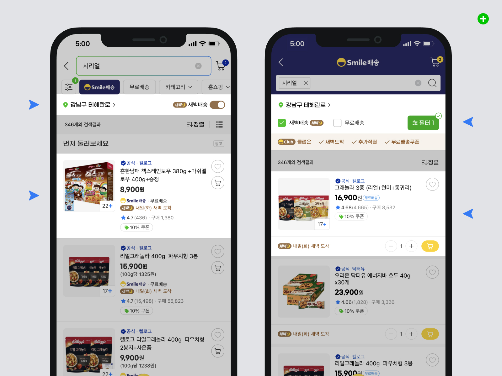
Released
Cart
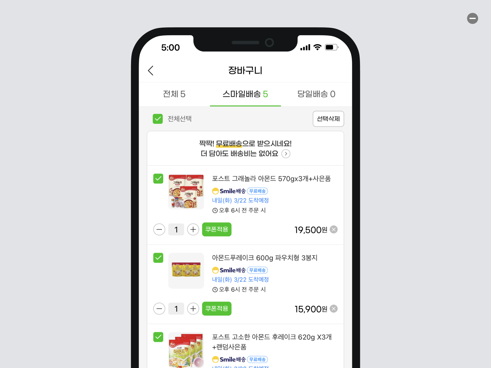
Before
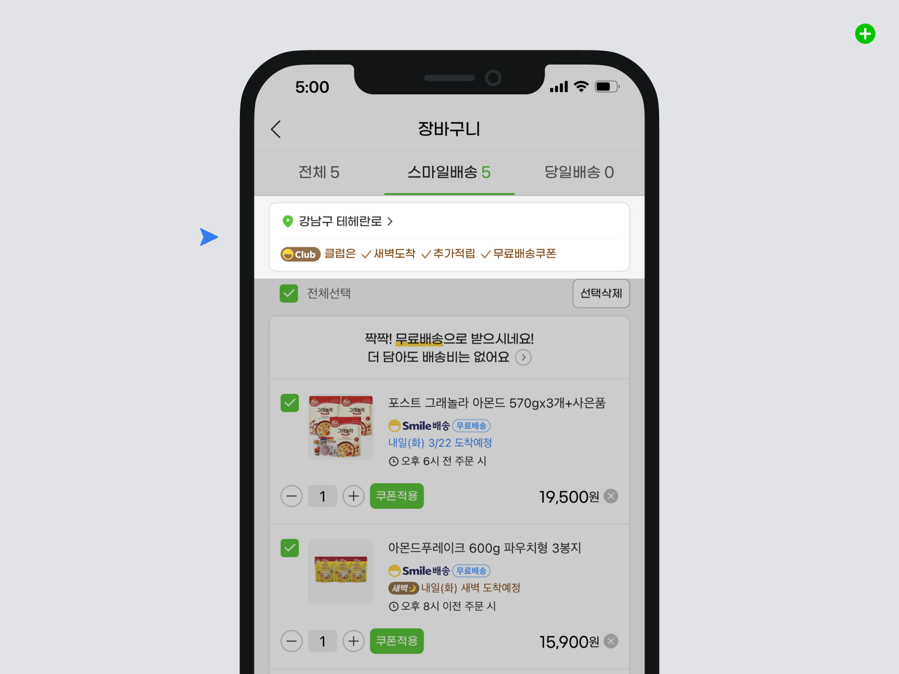
Released
Order
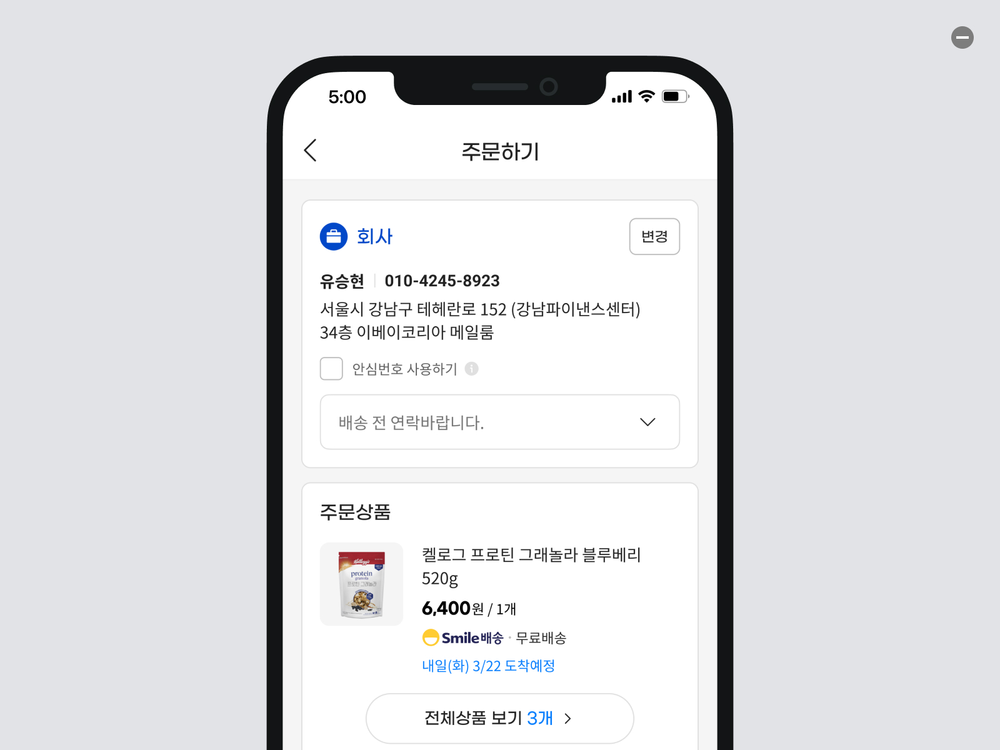
Before
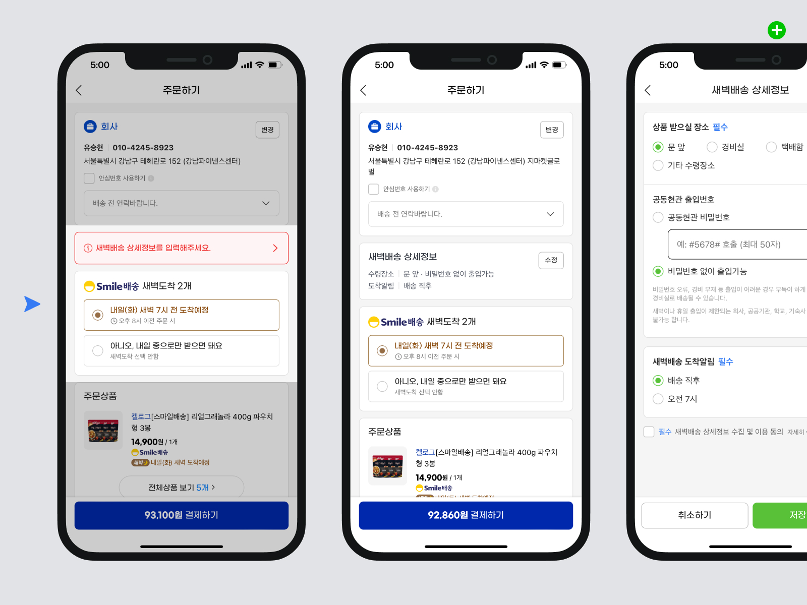
Released
Case Study
사용성 평가 환경 조성을 위해 상품 구매 주요 동선을 파악하고 필요한 프로토타입 케이스를 분류했습니다. 지마켓 스마일배송(새벽배송) 제품을 검색하는
과정은 크게 3가지로 구분됩니다. 목적구매 중심의 사용자는 메인 검색을 이용해 'Core' SRP(검색 결과, Search Result Page) 화면으로 이동해 검색 중심의
구매 경험을 할 수 있고, 정해진 상품 없이 상품을 찾는 브라우징 중심의 사용자는 무료배송, 할인 혜택을 한 번에 확인할 수 있는 'Section' 'Corner'에서 상품을
확인할 수 있습니다.
Core
지마켓의 모든 상품을 검색할 수 있는 주요 Flow입니다. 지마켓의 사용층 64%는 구매 상품을 미리 정하고 검색하는 '목적구매' 방식으로 지마켓을 사용 중이며 해당
Flow를 통해 빠르게 상품을 검색하고 구매합니다.
Section
메인 홈에 구성된 탭 메뉴 중 하나인 '스마일배송 숏컷' 페이지입니다. 할인혜택, 추천상품 등 스마일배송 혜택들을 제공하는 사용자 맞춤 피드입니다.
Corner
스마일배송 상품을 모아볼 수 있는 '스마일배송 상품관' 입니다. 지마켓 멤버십을 이용중인 '스마일클럽' 회원들의 다양한 혜택 정보를 얻을 수 있고
카테고리별 인기 상품들을 한 눈에 확인할 수 있는 페이지입니다.
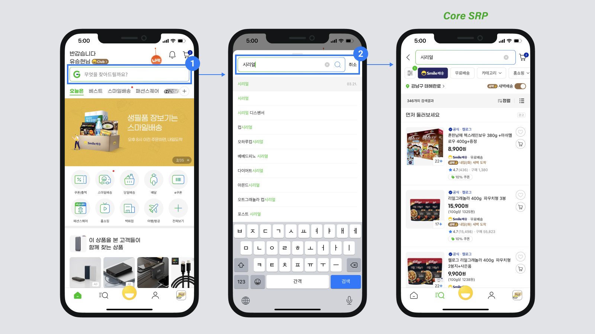
01. Core
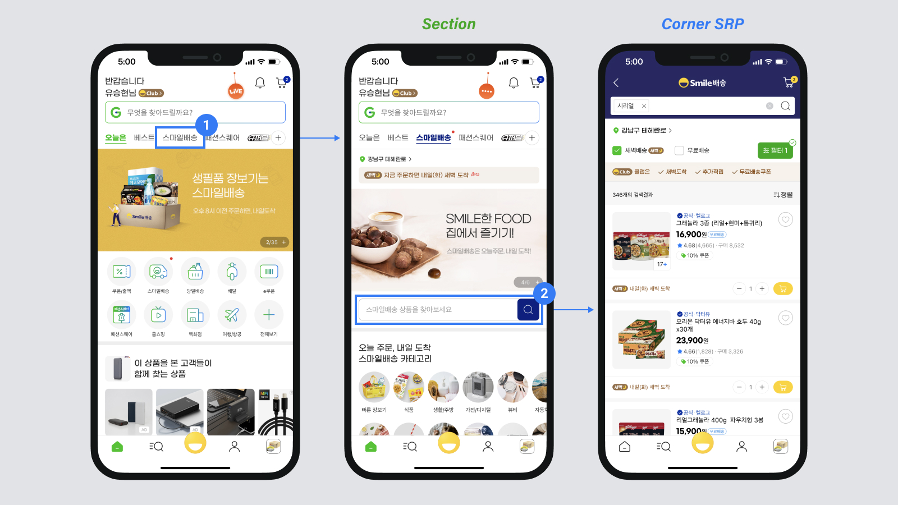
02. Section
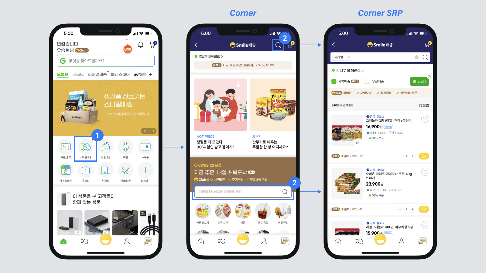
03. Corner
Usability Test
Case Study에 따라 상품 구매까지 이어지는 3가지 주요 동선을 하나의 프로토타입에서 확인할 수 있도록 제작했습니다. 각 화면별로 매끄럽게 이어질 수 있는 동선을
중점으로 제작하고 기능적으로 확인이 필요한 필터, 새벽배송 주문 마감 안내에 대한 컴포넌트는 실제 구현된 수준으로 목업을 제작해 사용했습니다.
User task
내일 아침에 간단하게 먹을 시리얼을 회사로 주문하려고 합니다. '켈로그 프로틴 그래놀라 블루베리 520g'을 원하는 방식으로 검색해
미리 등록된 '서울시 강남구 테헤란로 152'주소로 구매해 보세요.
Checklist
검색 결과 화면에서 새벽배송 상품 필터링 하는 유형을 파악합니다.
태스크 수행 중 추가된 배송 주소록 변경 기능 사용 여부와 주소 변경 시점을 확인합니다.
새벽배송 주문 마감 시간에 대한 인지성을 확인하고 마감 시 사용자 행동 패턴을 확인합니다.
새벽배송 상품 주문에 필요한 필수 정보 입력에 몇 회의 시도가 필요한지 확인합니다.
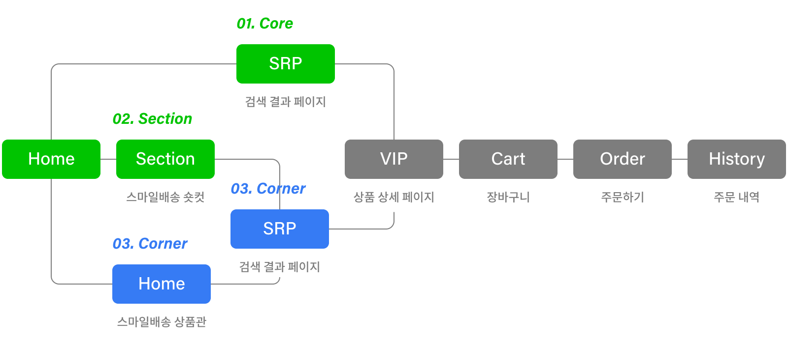
01. Item Card
A - 한 달 무료 혜택 강조
'새벽배송' 서비스 명을 그대로 적용해 배송 구분을 강조하고 '클럽(멤버십) 한 달 무료' 혜택을 강조합니다.
B - 멤버십 전용 혜택 강조
기존 멤버십 태그 디자인을 활용해 멤버십 대상의 '클럽 전용 혜택'인 점을 안내하고 멤버십 회원을 대상으로 새벽배송 태그로 분리 적용합니다.
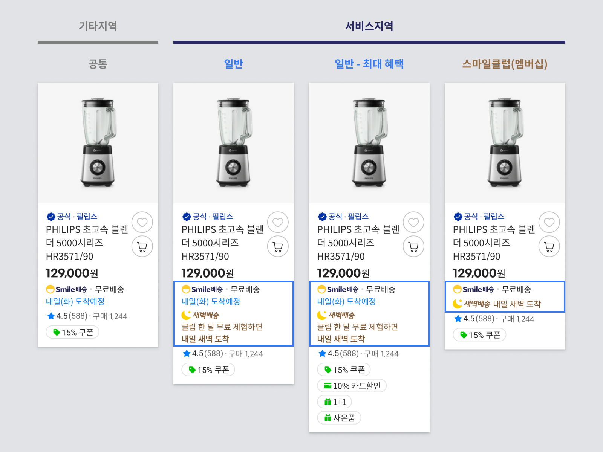
A - Free trial
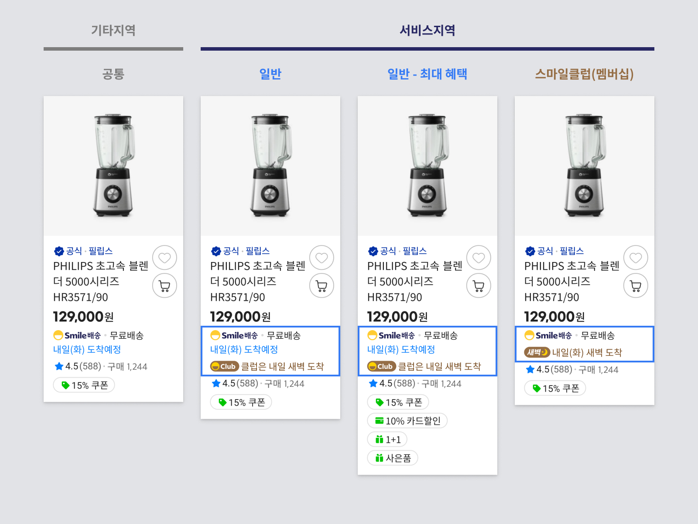
B - Membership only
01. Item Card - Result
'클럽(멤버십) 한 달 무료' 혜택을 강조해 넛징 문구로 활용했으나 검색 결과, 상품 리스트 화면에서 많은 양의 정보 텍스트가 함께 노출되는 상황에서 상품의 길이가
길어져 탐색을 위해 사용자가 소화하는 정보 양이 많아졌습니다. 따라서 '클럽 전용 혜택'에 집중해 멤버십 혜택 대상 서비스임을 안내하고 태그 디자인은 본문과 구분되어 가독성에
중점을 둔 디자인으로 적용되었습니다.
공통(서비스 미제공 지역)
새벽배송 서비스 지역이 아닐 경우 멤버십 여부과 관계없이 스마일배송 정보만 노출됩니다.
일반회원
새벽배송 서비스 가능 주소록이 설정된 일반회원에게 새벽배송 상품이 제공됩니다. 현재 이용할 수 있는 혜택인 스마일배송 정보와 함께 멤버십 '스마일클럽' 가입을 유도하는
클럽 태그가 노출됩니다. 새벽배송 서비스는 멤버십 대상으로 제공되는 서비스로 새벽배송 태그가 아닌 스마일클럽 태그로 노출합니다.
스마일클럽(멤버십)
스마일배송 상품은 가장 빠른 배송 정보가 우선 노출됩니다. 따라서 새벽배송 서비스 주소가 설정된 멤버십 회원은 새벽배송 태그 정보로 노출됩니다.
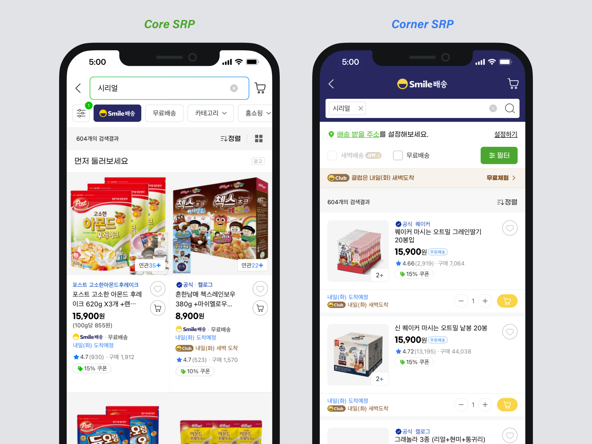
Released - Nonmembership
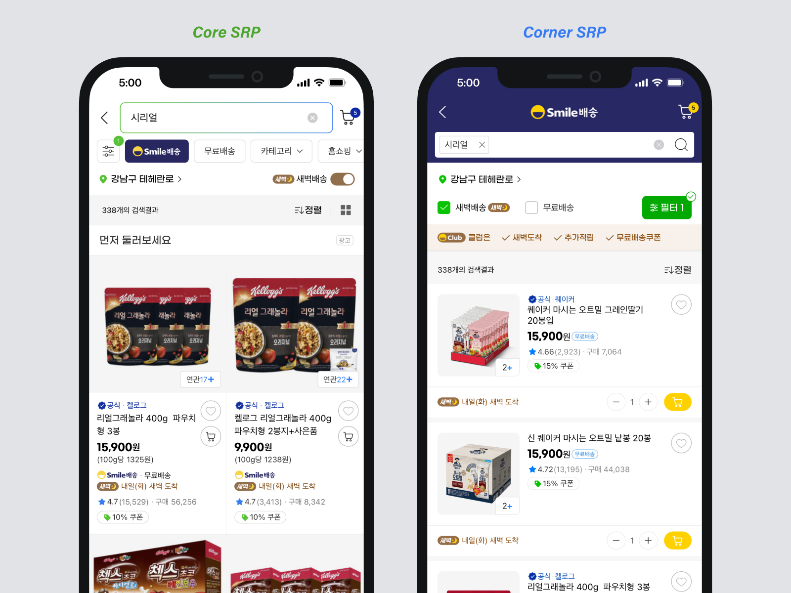
Released - Smileclub
02. Filter
SRP(검색결과화면, Search Result Page)에서 새벽배송 상품 필터링 UX 테스트를 진행했습니다. 새벽배송 서비스는 스마일배송 서비스에서 멤버십 회원을 대상으로 제공하는
서비스입니다. 스마일배송 서비스 자체 강화를 목적으로 새벽배송을 따로 구분하지 않고 스마일배송 하위 레이어에서 노출되도록 정의되어 있습니다. 기존 지마켓 필터 사용성인
'체크박스'와 On, Off로 활성화되는 'Toggle' 2가지 형태로 테스트를 진행했습니다.
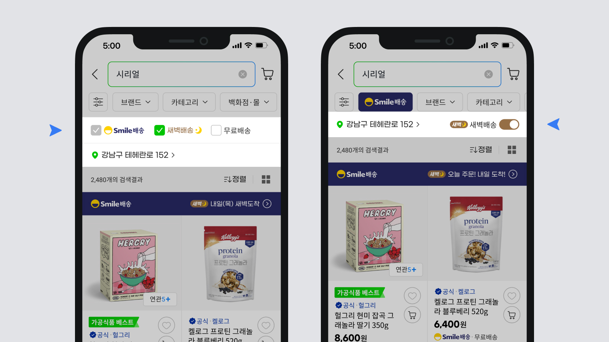
Core SRP Prototype A/B
초기에 스마일배송 하위 새벽배송 서비스를 사용자가 이해하는 것은 어려울 것으로 판단했고, 스마일배송 선택 유무와 관계없이 새벽배송 필터를 노출하고
새벽배송 필터를 우선 선택 시 스마일배송 필터가 활성화되며 서비스 구조를 인지시킬 수 있도록 고려했습니다. 사용자가 필터에 접근하는 순서와 행동에 따라
역순으로 해제되는 구조로 정의되었습니다.
스마일배송 선택 > 새벽배송 선택 > 해제
진입한 순서에 따라 새벽배송 필터만 해제되고 스마일배송 필터는 유지됩니다.
새벽배송 선택 > 해제
진입한 순서에 따라 스마일배송, 새벽배송 필터가 모두 해제됩니다.
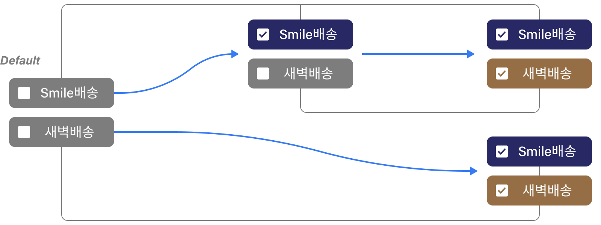
02. Filter - (A)Checkbox
체크박스 형태는 기존 스마일배송 코너에서 사용 중인 형태로 지마켓 사용자에게 가장 익숙한 형태입니다. 새벽배송 필터가 활성화되면 스마일배송 필터도 함께
체크되며, 스마일배송을 별도로 해제할 수 없는 이미지를 전달하기 위해 필터 선택에 따라 체크박스 상태를 구분했습니다.
A - Checkbox
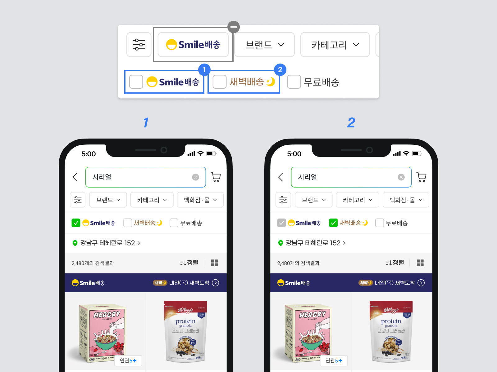
UI mockup
Prototype
02. Filter - (B)Toggle
토글 형태는 기존 스마일배송 필터 위계를 유지하면서 하위에서 포함된 새벽배송 서비스를 명확하게 보여줄 수 있었습니다. 체크박스 형태에서 제공하기
어려웠던 혜택 넛징 포인트(클럽 혜택, 새벽배송 문구 등)를 안정적인 형태로 함께 적용할 수 있었고 사용자가 인지할 수 있는 범위가 넓어질 수 있었습니다.
또한 새벽배송 태그 디자인을 중복적으로 노출이 용이해 인지성을 높일 수 있었습니다.
B - Toggle
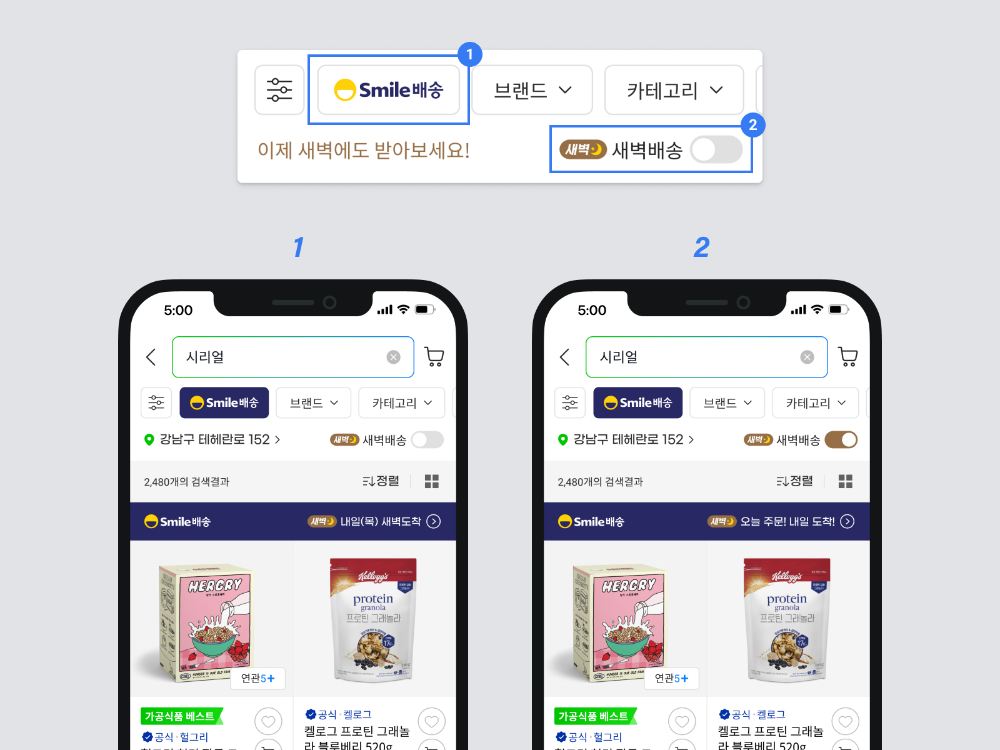
UI mockup
Prototype
02. Filter - Result
A안 체크박스의 경우, 기존 스마일배송 카테고리를 새벽배송 필터와 나란히 위치하면서 조정된 위계가 노출되는 우선순위가 낮아지고 혜택에 대한
넛징 포인트도 적용하기 다소 어려웠습니다. Core에서 버튼 형태로 제공하는 요소들이 많다보니 체크박스의 형태가 눈에 잘 띄지않아 새벽배송
상품을 찾는데 어려움을 느낀다고 호소했습니다.
Insights
테스트 참여자 32명 중, 23명의 참여자가 B안 Toggle 방식을 선호했습니다. 토글 형태의 컴포넌트는 형태자체로 구분되며 멤버십 여부에 따라
제공되는 넛징 문구와 함께 제공되어 보다 쉽게 인지가 가능했습니다. 또한 새벽배송 서비스를 별도로 구분하지 않고 스마일배송 내에서
제공하는 멤버십 혜택인 점을 인지하기에 A안 대비 용이했습니다.
Corner에서는 새벽배송 필터 노출 자체만으로도 서비스 구조를 따르고 Core와 다르게 제공되는 버튼의 요소가 적어 체크박스의 형태로 충분히 필터형태를 제공할
수 있었습니다. 검색이 익숙한 사용자에겐 보다 눈에 띌 수 있는 사용성을 제공하고 브라우징이 익숙한 사용자에게는 기존 지마켓 사용자에게
사용성을 제공하는 형태로 구분해 적용할 수 있었습니다.
Core SRP : B - Toggle
Corner SRP : A - Checkbox
Released - Core SRP
02-1. Address - Result
새벽배송 서비스가 지역에 따라 가능 여부가 달라지고 상품군도 달라지게 되니 각 동선마다 중복적으로 배송 주소록을 노출하고 있습니다. 테스트 참여자들은 주로
하나의 주소만 사용하지 않고 여러가지 주소(시댁, 친정 등)로 구매하는 경험을 갖고 있어 중복적으로 노출되는 배송 주소록 UI에 대해서 설정된 배송 주소를
수시로 확인할 수 있어 긍정적인 경험을 했습니다.
다만 추가된 배송 주소록 UI가 지속적으로 노출되는 상황에서 개인 정보 유출에 대한 우려가 있었습니다. 일부 참여자들은 지하철이나 버스 등 이동 중인 상황에서
서비스를 사용하는 경험이 많았으며 밀착된 공간에서 사용 시 설정된 주소가 노출되는 점을 걱정했습니다. 따라서 기존 배송 주소록에서 사용 중인 '사용자 설정' 기능을
활용해 사용자가 설정한 배송지 이름이 노출되는 안으로 테스트를 함께 진행했습니다.
Insights
사용자 지정 아이콘을 추가해 테스트하면서 검색 결과, 상품 리스트 화면의 복잡도(색상, 아이콘 등)가 높아졌고 복잡한 UI로 인해 브라우징 경험이 안 좋아진다는
일관된 피드백을 얻을 수 있었습니다. 따라서 기존의 방향성을 유지하되 노출되는 배송 주소록의 노출 정책을 수정해(상세주소를 제외한 도로명까지 노출)
개선하도록 정의했습니다.
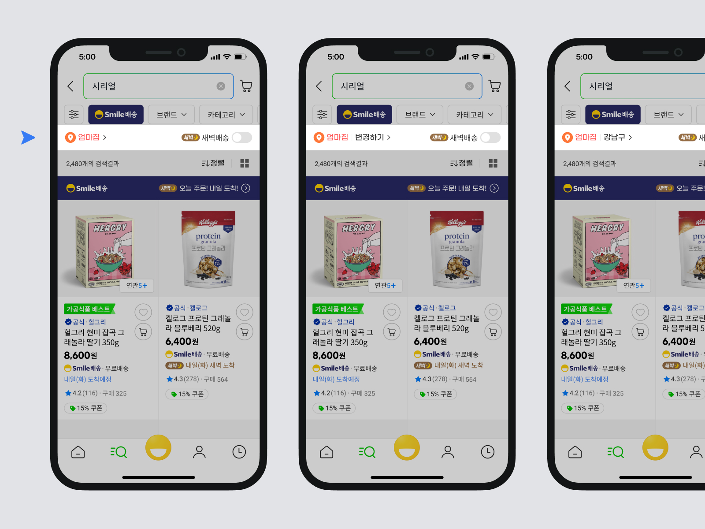
UI mockup
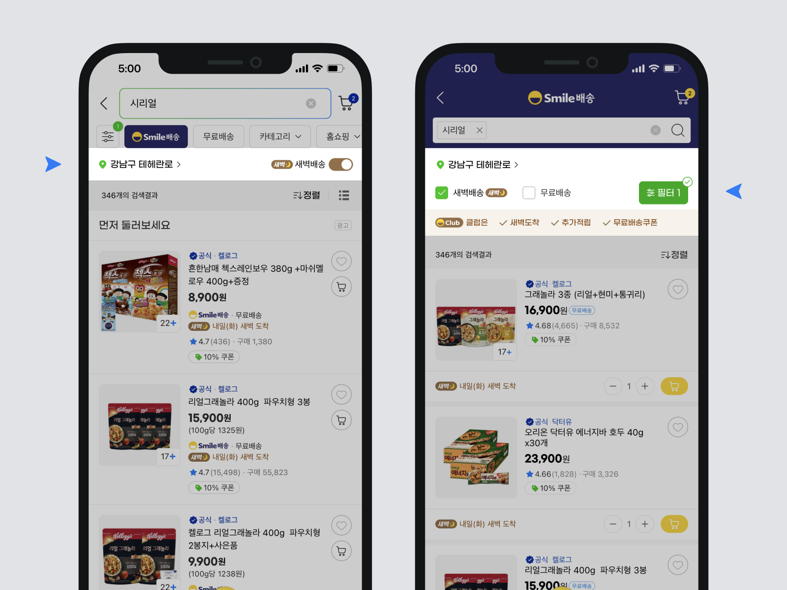
Released
03. Cart
새벽배송이 추가되면서 장바구니에 담긴 상품들의 배송정보의 사용성을 테스트했습니다. 상품을 구매하는 동선(상품 상세페이지 등)에서 새벽배송 주문 마감 시간을
미리 안내를 해주지만, 장바구니는 결제 행동이 이루어지는 전 단계인 만큼 보다 강조된 주문 마감 시간 안내를 제공하도록 적용했습니다.
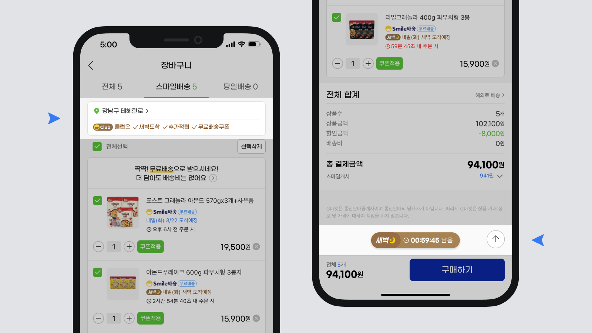
Released
03. Cart - Timer
장바구니에 진입하면 하단에 타이머를 등장시켜 주문 마감 시간을 안내했습니다. 주문 마감 시간을 명확하게 안내하고 구매 욕구를 자극하는 긍정적 피드백을 얻을 수
있었으나 장바구니에 담긴 상품의 브라우징 경험을 해친다는 부정적 피드백도 무시할 수 없었습니다. 하단 타이머 사양을 정의해 긍정적 피드백을 수용하고 부정적 피드백을
해소할 수 있도록 개선했습니다.
Insights
이미 상품 정보 내에서 주문 마감 시간을 안내하고 있기 때문에, 하단 타이머 안내는 주문 마감 시간인 오후 8시를 기준으로 1시간 이전부터 등장하도록
노출 사양을 정의했습니다. 마감 시간에 대한 안내를 강조하고 장바구니 상품을 둘러보는 경험을 해치지 않도록 개선했습니다.
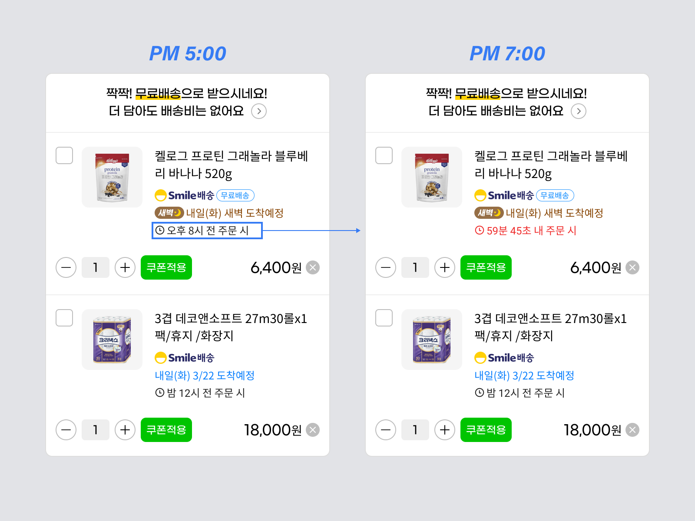
UI mockup
Prototype
03. Cart - Result
사용 중 주문 시간이 마감되면 기존 배송 정보를 비활성화해 사용자의 새로고침을 유도했습니다. 기대와는 달리 참여자들은 새로고침을 누르지 않고 다른 대체 상품을
찾는 행동을 보였습니다. 새로고침 버튼이 눈에 잘 익지 않았고 비활성화된 도착일이 '배송불가'로 느껴진다는 피드백을 얻을 수 있었습니다. 새로고침을 버튼으로
인식하기 전 대체상품 구매를 위해 서비스를 이탈할 수 있다는 피드백이 있었고 주문 마감 시간에 대한 피드백을 개선할 필요가 있었습니다.
Insights
주문 마감 시간이 지나면 자동으로 새로고침되어 배송일이 업데이트되고 하단 토스트 안내 유지 시간을 늘려 충분한 안내 시간을 제공하도록 개선했습니다.
주문 마감 시간이 이르다는 피드백도 있었지만 새벽배송 가능 시간이 지나더라도 '내일 중으로 도착'할 수 있는 점을 어필해 긍정적인 고객 경험으로 전달되고자 했습니다.
Result
04. Order
새벽배송 서비스가 추가되면서 사용자가 등록된 배송 주소록에 새벽배송을 위한 상세정보를 입력해야 했습니다. 주문하는 단계에서 '새벽배송 상세정보'를
사용자가 익숙하게 사용할 수 있도록 몇가지 시안과 UX Writing테스트를 진행했습니다.
배송지 상세정보
새벽배송에 대한 추가 정보를 입력하는 것이 아닌, 배송지 자체에 추가 정보를 요청하는 것으로 인지되어 테스트 참여자들이 신규로 추가된 필드를
이해하고 인지하는데 어려움이 있었습니다.
새벽배송 요청사항/수령정보
안내 문구 주어를 '새벽배송'으로 집중하고 기사에게 요청하는 행동을 안내 문구로 정의했습니다. 의도와는 달리 '요청사항'이란 문구에서 상단의 배송
요청사항과 중복된 기능으로 인지되는 경우가 있어 명확하게 인지가 어려웠습니다.
새벽배송 상세정보
안내 문구 주어를 유지하고 기능에 대한 설명은 중립적인 안내 문구로 적용했습니다. 사용자가 해당 기능을 직접 유추하고 사용할 수 있도록
의도되었으나 여전히 참여자가 원활하게 태스크를 수행하는 것은 어려워보였습니다.
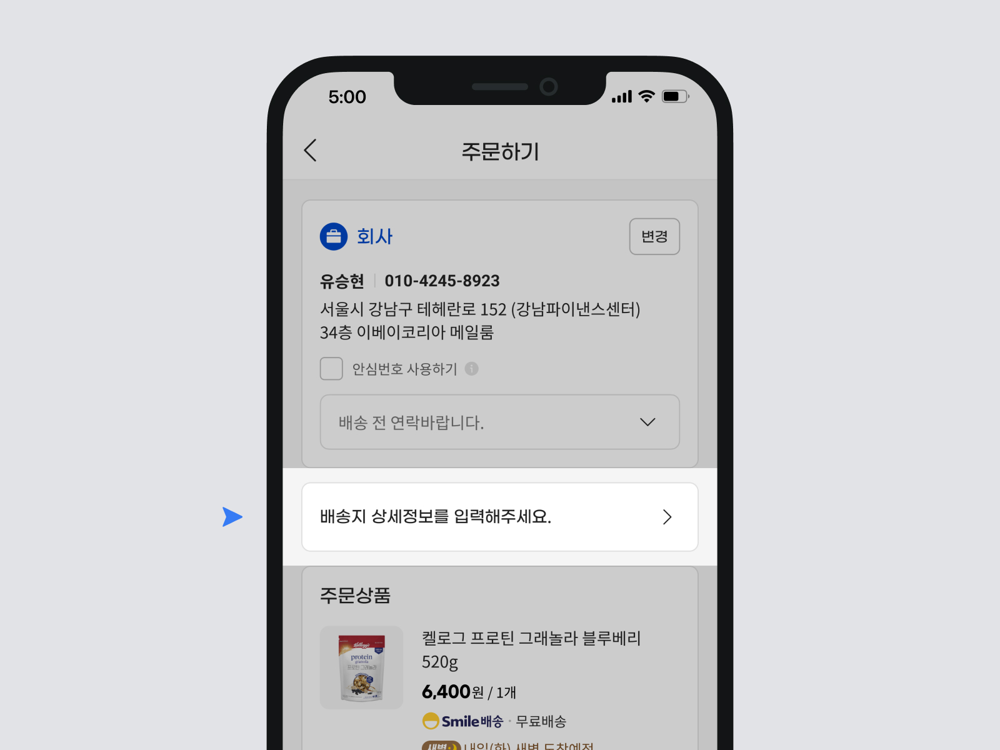
Progressing - Day 1
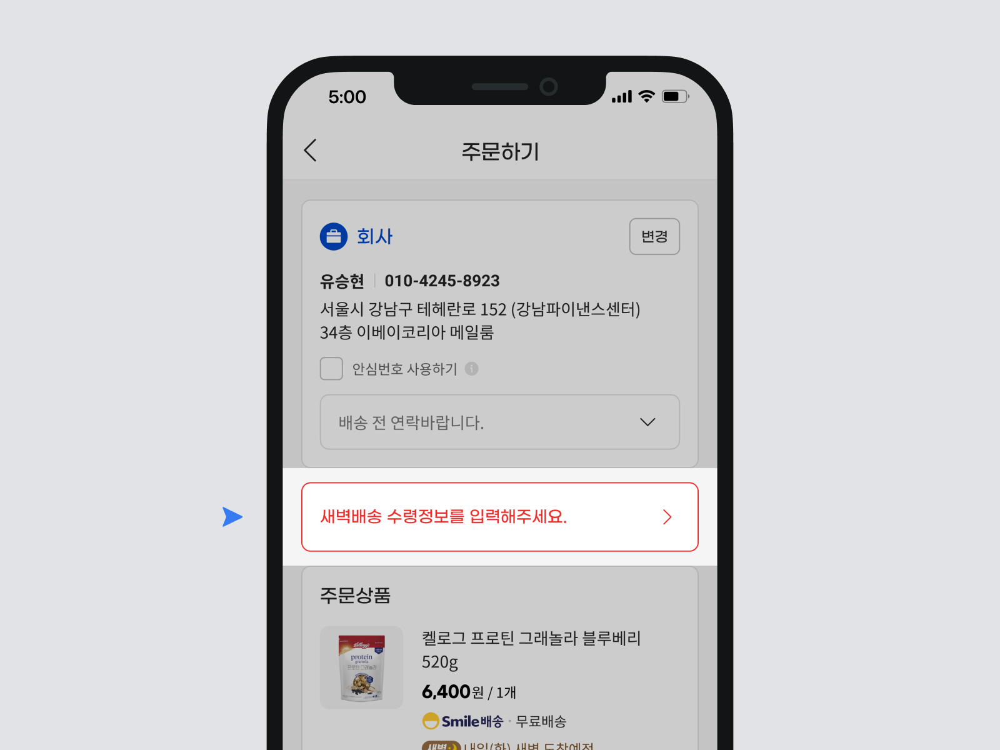
Progressing - Day 2
04. Order - Result
기존에 없는 기능이 추가되는 과정에서 새롭게 추가된 입력 필드를 사용자가 인지하는 것에 어려움이 많았습니다. 입력 필드로 접근하는 영역의 UX Writing도 중요하지만
UI 관점에서 사용자가 사용할 수 있는 기능임을 인지하기가 부족한 것으로 판단했습니다. 초기 한 번의 설정이면 지속 사용에 문제가 없다고 판단해 1회 내 수행 완료를
목표로 태스크 수행 실패시 피드백을 강화하는 방향으로 개선했습니다.
Insights
사용자가 해당 기능을 설정하지 않은 상태로 '구매하기' 버튼을 수행하면 스크롤값이 초기화되어 입력 필드로 돌아가도록 개선했습니다. 또한 해당 영역에 애니메이션을
추가해 사용자가 구매에 필요한 기능을 인지할 수 있도록 활용했고 추가 테스트에서 태스크 수행률을 대폭 향상시킬 수 있었습니다.
Released
Project Behind
Design Validation
신규 서비스의 UX를 시각화하는 단계에서 사용성을 검증하고 개발 과정에서의 커뮤니케이션 비용 감소를 위해 프로토타입 테스트를 진행했습니다.
프로토타이핑을 통해 다양한 아이디어를 실제 사용자들을 대상으로 테스트하며 객관적인 피드백을 반영해 다양한 아이디어의 좋은 지점을 결합해
서비스를 신속하게 론칭하고자 했습니다.
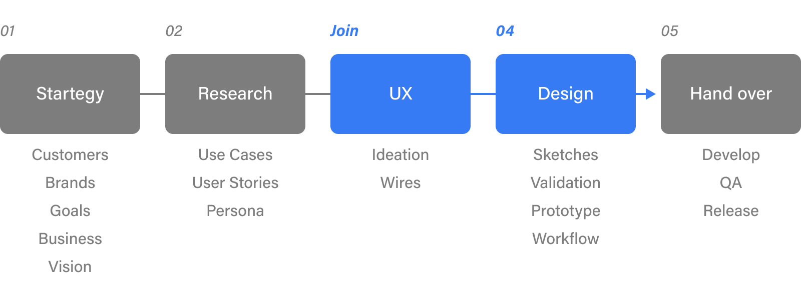
Why 'RITE' Process?
'RITE' 방법론은 (Rapid Iterative Testing and Evaluation) 신속하고 반복하여 진행하는 소규모 사용성 평가 프로세스입니다.
제한된 프로젝트 기간 내에 효과적인 개선 방법을 찾도록 'RITE' 방법론을 채택해서 테스트를 진행했습니다.
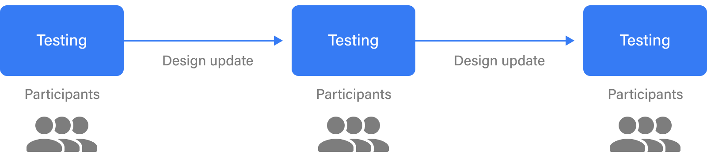
Timeline
'RITE' 방법론을 통한 사용성 평가 과정은 처음 진행된 내용으로 내부 임직원을 통한 사전 테스트를 진행해 테스트 과정에서 미리 파악하지 못한 문제점을 찾았습니다.
사전 테스트를 통해 테스트 환경에 대한 개선점을 찾고 테스트 시안에 대한 1차적인 검증을 진행하고, 이후 참여자(사용자)들을 대상으로 테스트를
진행해 UX 검증 프로세스를 진행했습니다.
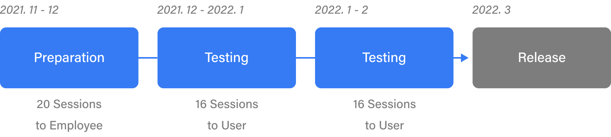
Rapid Prototyping
테스트에 참여할 지마켓 사용자들을 모아 테스트 타임라인을 만들었습니다. 오전과 오후 두 그룹으로 진행하며 각 그룹별 A안, B안의 프로토타입으로
사용성 테스트를 진행했습니다. 각 테스트 세션이 끝나는 사이 테스트 과정에서 보였던 이슈들을 해결하고 공통적으로 언급되는 'Pain-Point'를 해결해
개선된 프로토타입을 지속적으로 테스트했습니다.
Wrap-up
공통적으로 언급된 'Pain-point' 키워드를 바탕으로 각 담당자 별로 해결 방향을 공유해 공통된 개선 지점을 찾았습니다. 공유된 개선 필요 지점은 실제 개발 가능
여부를 먼저 판단하고 프로토타입에 반영해 다음 평가 세션에서 테스트했습니다.
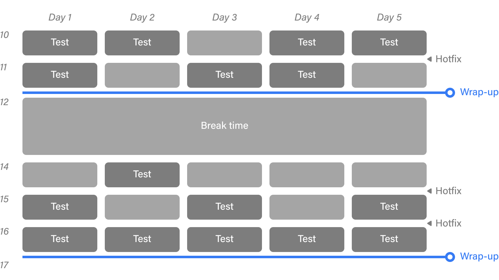
Recruiting
스마일배송 '새벽배송' 서비스는 지마켓 멤버십 서비스인 '스마일클럽'을 이용중인 회원을 대상으로 제공합니다. 따라서 지마켓을 기존에 충실히
사용해온 충성 고객들과 비교적 사용시기가 짧은 신규 고객들을 연령대별로 모집해 해당 회원들을 대상으로 테스트한 결과물을 바탕으로
편리한 UX를 제공할 수 있도록 진행했습니다. 각 참여자는 미리 수집된 설문 조사를 참고해 피드백 반영 필요도, 중요도를 판단했습니다.
Survey
성별, 나이, 직업
거주동(주택 구분), 거주인원
이용 중인 온라인 커머스 서비스
지마켓 등록 배송지 갯수
3개월 내 새벽배송 서비스 경험, 현재 이용 중인 서비스
가장 자주 이용하는 서비스, 이용 빈도
이용 중인 유료 멤버십
기타 의견
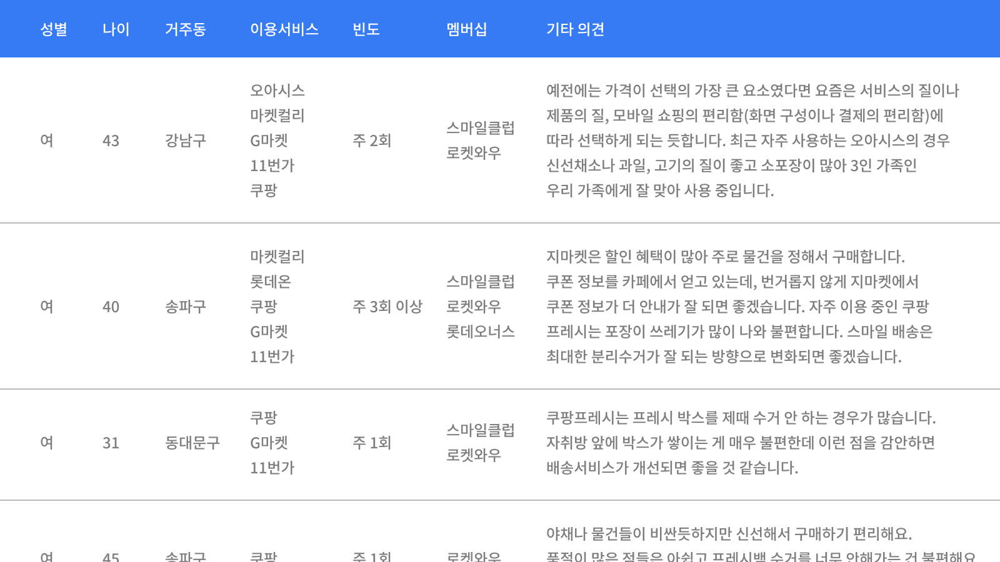
Testing Set-up
테스트에 참여하는 사용자들이 편안한 환경에서 원래의 구매 패턴을 활용해 테스트를 진행할 수 있도록 1 대 1 테스트를 진행했습니다.
진행자는 미리 정해둔 Task를 사용자에게 안내하고 진행하며 사용자의 휴대폰을 촬영합니다. 디자이너, 개발자 등 관련 담당 부서의 인원들은 연결된 줌에서
사용자의 테스트 환경을 보며 실시간으로 아이디어를 나누고 사용자들의 행동 패턴을 파악합니다.
내부 직원들을 통한 사전 테스트를 통해서 진행자, 테스트 환경에서 개선되어야 할 부분을 파악했습니다. 테스트 환경이 촉박할수록 사용자의 행동이 나오지 않고
수행 과제를 달성하려는 목적으로만 행동하는 경향이 있었습니다. 참여자의 느낌과 행동을 그대로 이끌어낼 수 있도록 아래와 같은 항목을 확인습니다.
Checklist
진행자는 참여자와 충분한 아이스브레이킹 시간을 갖고 참여자가 테스트 과제에 몰입해 행동이 제한되는 환경을 예방하도록 합니다.
참여자는 테스트 진행 간에 어려운 점이나 느낌을 얘기하면서 진행합니다.
참여자의 생각과 느낌을 그대로 표현할 수 있도록 진행자는 중립적인 태도로 진행하며 테스트 진행이 어려운 경우 마지막에 개입해 테스트를 이어갈 수 있도록 돕습니다.
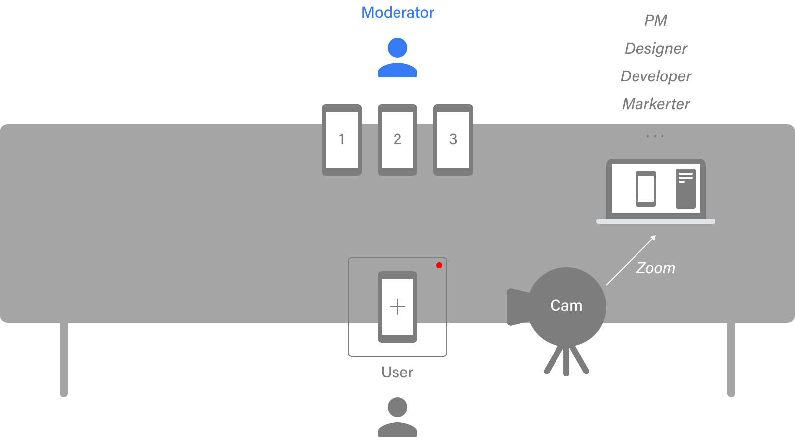
Recording
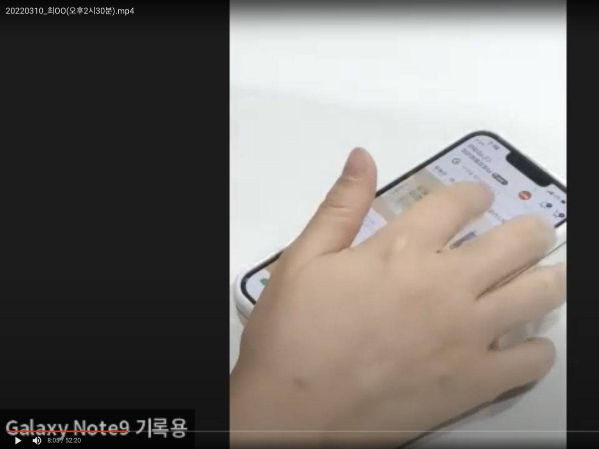
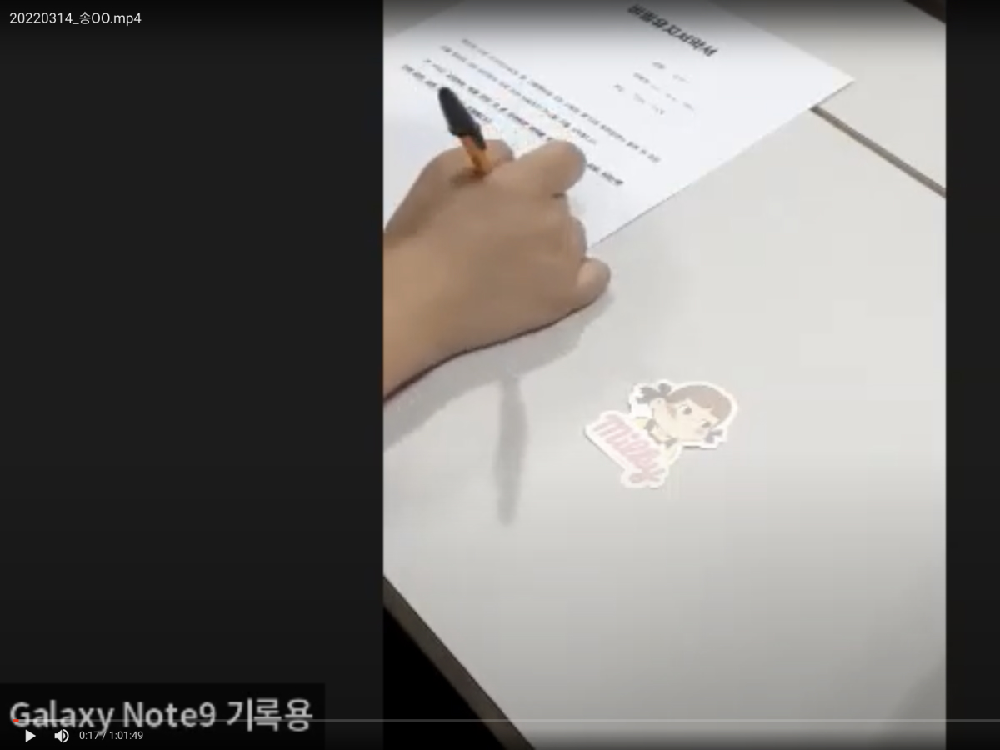
Prototypes
실제 개발된 버전이 아닌 프로토타입으로 사용성 평가를 진행하면서 UT 초기 참여자들은 과제 수행에 어려움이 호소하기도 했습니다. 실제로 구동되지 않는
기능들이 많기 때문에 진행자가 개입하는 상황이 많았고 참여자들이 직접 눌러보는 행동을 자제하기 시작했습니다. 따라서 진행자 행동 규칙을 정리하고
프로토타입 내에서 구현되지 않은 기능들에 대한 힌트를 제공하도록 했습니다.
Checklist
구현되지 않은 기능에 대한 피드백은 진행자가 아닌 프로토타입 내에서 제공합니다.
각 화면과 화면이 전환되는 로딩 시간은 실제 운영 앱 성능과 동일하게 적용합니다.
터치 영역은 실제 영역보다 넓게 적용해 쉽게 조작할 수 있도록 적용합니다.
성능 저하를 방지하기 위해 필수 컴포넌트가 아닌 영역은 이미지로 적용합니다.
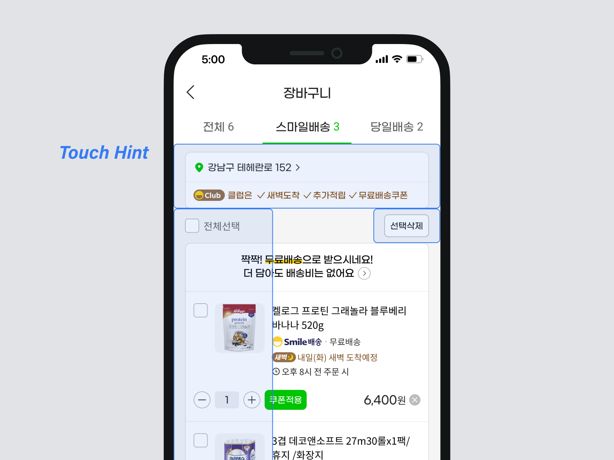
Touch Hint
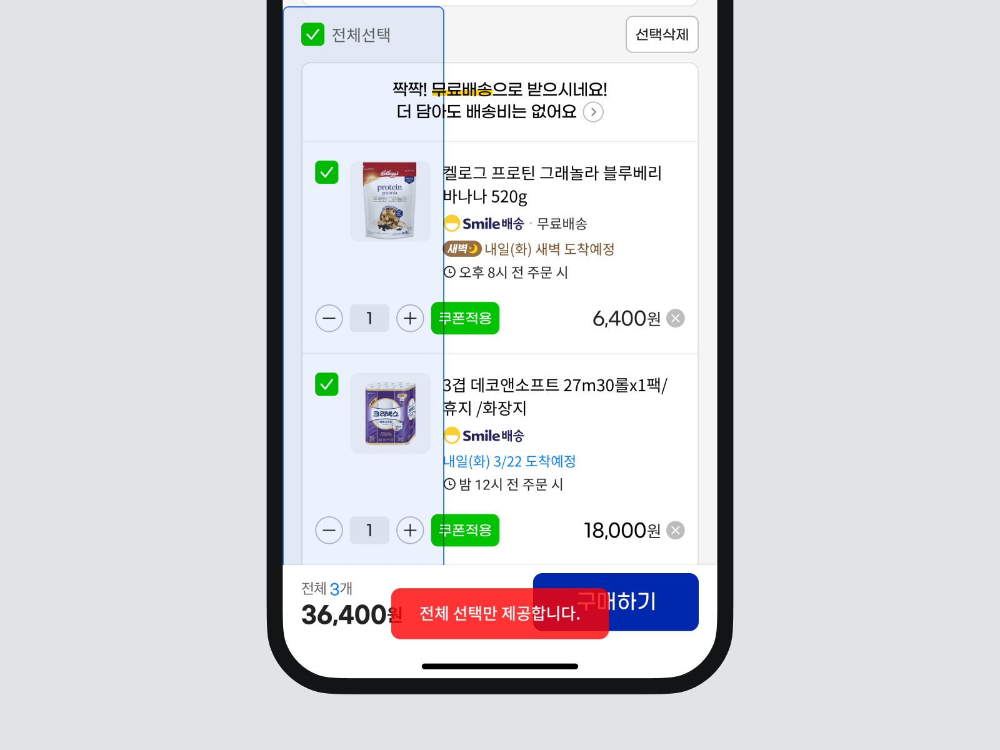
Feedback Hint
사용성 평가에 사용된 프로토타입은 프로토파이를 사용해 제작했으며, 각 화면별 Transition, 컴포넌트 요소의 Move, Scale 등 기본적인 기능들을 활용했습니다.
필터 선택 여부에 따른 디자인 변경은 Condition 기능을 활용하고 주문 마감 타이머는 Variables, 간단한 Formula를 사용해 구현했습니다.
Protopie
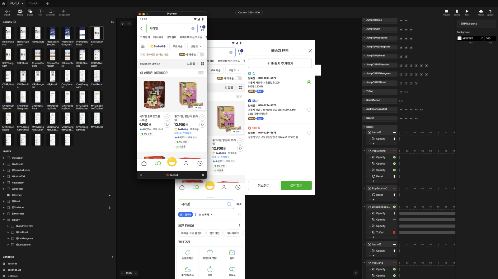
What I Learned
Design validation
많은 사용자를 보유한 서비스의 신규 기능을 검증하고 반영하는 과정을 경험하며 디자인 검증에 대한 중요성을 배울 수 있었습니다. 디자이너로서 생각한 방향과
실제 사용자들이 생각하는 방향성은 크게 다를 수 있다는 것을 느낄 수 있었고 객관적 사고를 위한 검증 환경을 경험할 수 있었습니다. 좋은 UX를 검증하는 것도
중요하지만, 좋지 않은 UX를 걸러내는 과정도 중요하다는 것을 배웠습니다.
Case study
커머스 서비스의 다양한 사용자들의 동선을 분석하며 하나의 기능에서 파생되는 많은 케이스들에 대해서 고민하는 경험을 했습니다. 하나의 기능이라도 일반회원,
멤버십 회원, 비회원 등 모든 케이스를 고려해 연결성 있고 비즈니스 임팩트로 연결되는 UX 디자인 경험을 할 수 있었습니다.
Data driven
객관적 사고, 사용자 데이터를 활용한 UX 개선 경험을 쌓을 수 있었으며 디자인에 활용되는 데이터가 얼마나 많은 커뮤니케이션 비용을 절감시킬 수 있는지
느낄 수 있었습니다.
Prototyping
사용성 평가를 통해 디자인 검증을 위한 프로토타이핑 숙련도를 크게 향상시킬 수 있었습니다. 개발 버전을 활용할 수 없는 제한된 상태에서 검증이 필요한
케이스를 추출해 빠르고 효과적인 프로토타입, 테스트 환경을 만들어 볼 수 있었습니다.
Epilogue
제작자의 입장과 사용자의 입장이 다를 수 있는 것은 짐작했지만 생각치도 못한 곳에서 사용자가 불편함을 호소하는 경우를 보면서 객관적인
시선에서 제품을 바라보는 것이 굉장히 준비성이 필요하다는 것을 경험할 수 있었습니다. 같은 결과물을 다르게 해석할 수 있는 상황에서 하나의 방향으로
모두를 적절히 만족시킬 수 있는 방법을 찾고 적절히 타협하여 가장 효과적인 방향을 제시하는 경험을 할 수 있었습니다.